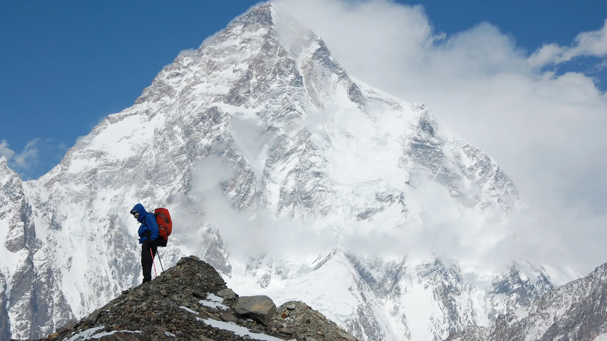
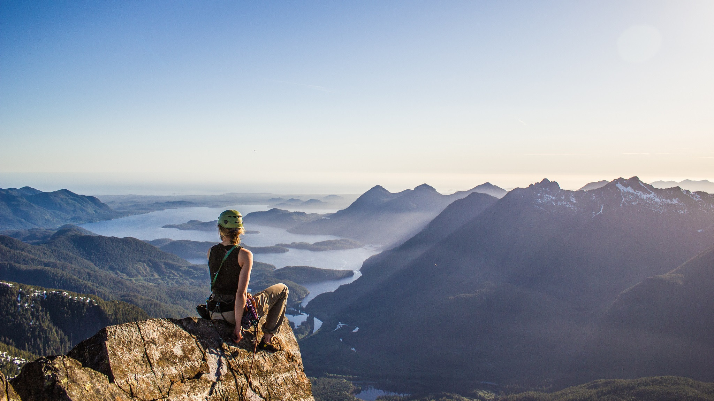

Technical Alpine Footwear
PERFORMANCE ON THE SUMMIT
Prémiová kolekcia horolezeckej obuvi pre technický alpinizmus, zimné výstupy a expedičné podmienky.


Prémiová kolekcia horolezeckej obuvi pre technický alpinizmus, zimné výstupy a expedičné podmienky.
SCARPA vznikla v Asolo a dlhodobo sa spája s alpským lezeckým výkonom. Značka stavia na talianskom remesle, presnom spracovaní a skúsenostiach z náročného horského prostredia.

Ľahký model pre rýchle alpské výstupy, presný pohyb na skale a spoľahlivú oporu v mixovom teréne.

Klasický vysokohorský model s dôrazom na stabilitu, ochranu a kompatibilitu s automatickými mačkami.

Expedičná obuv pre extrémne chladné podmienky, dlhé výstupy a výšky nad 8000 metrov.
Odolné materiály, presná konštrukcia a stabilita v teréne sú základom tejto kolekcie. Každý model je navrhnutý pre konkrétny typ použitia, od rýchleho alpinizmu až po expedičné výstupy.

Superlight boot pre rýchly alpinizmus. Ponúka presný nástup, nízku hmotnosť a kontrolu v strmom teréne.
Klasický mountaineering boot vhodný pre ľadovcové prechody, zimné hrebeňe a automatické mačky.

Expedičná topánka navrhnutá pre extrémne chladné podmienky, dlhé výstupy a maximálnu tepelnú ochranu.